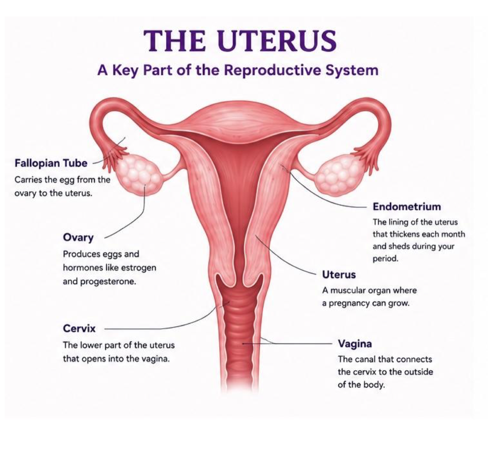

The conditions, the myths that delay them, what counts as normal, and what every part of the reproductive system actually does.
Students told us these come up again and again, and often go undiagnosed for years. Tap any card to open it, tap outside to come back.
Symptoms vary a lot between people, and a doctor is the only one who can diagnose any of these. If something on these cards sounds like you, that's a reason to start a conversation, not a conclusion.
Average delay to an endometriosis diagnosis
Will be diagnosed with endometriosis
Symptoms often begin soon after your first period
Stats: Endometriosis Foundation of America (endofound.org), estimates vary by source.
Every one of these has been said to a student. Every one of them costs time.
"You're just trying to get out of class."
Fatigue and pain genuinely make it hard to concentrate, and for most people with endometriosis, pain doesn't actually improve with over-the-counter medication.
"Only adults get reproductive health conditions."
Many conditions begin during adolescence, often right after a first period, and can worsen over time if untreated.
"You don't have heavy bleeding, so it can't be endo."
There's no single "required" symptom, the presence of any of these patterns is worth a conversation, not a checklist to fully match.
"Fibroids are cancerous tumors."
Fibroids are non-cancerous growths. They can still cause real symptoms worth treating, but they aren't cancer.
This isn't a diagnosis tool, it's a starting point for figuring out whether what you're feeling is worth bringing to a doctor, nurse, or trusted adult.
Many reproductive health conditions first develop during adolescence.
Severe menstrual pain that prevents you from attending school, sports, or everyday activities is not something you should simply ignore.
Everyone's experience with reproductive illnesses is different, two people with the same condition may have very different symptoms.
Learning about your body helps you communicate more confidently with trusted adults and healthcare providers.
Tap a number on the diagram to see what that part is, what it does, and why it matters when something goes wrong.

Every number on the diagram is a part of the reproductive system. Tap one and this panel will tell you what it is, what it does, and why it comes up when someone is being assessed for endometriosis, PMOS, fibroids, adenomyosis, or PMDD.
Knowing the names makes a real difference at an appointment. "It hurts near my left ovary during my period" gets taken more seriously than "my stomach hurts."
The diagram shows the reproductive organs. These parts aren't on it, but they're just as involved.
No names, no accounts. Submit a question you'd never ask out loud, we'll use real (anonymized) questions to build out the resources on this site.
Students have asked things like:
If you think something isn't normal: track your symptoms, talk to a trusted adult, visit your doctor or nurse practitioner, ask for a referral if symptoms continue, and seek a second opinion if you feel dismissed. Pain that regularly keeps you from school, sports, or daily life is not something you should simply "live with."